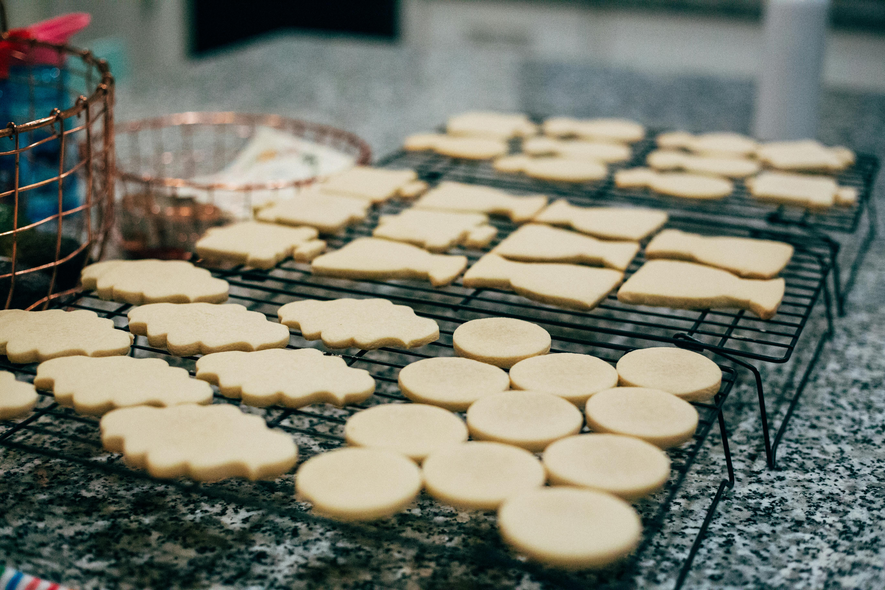

Simple Sugar Cookies

Sugar Cookie Recipe Overview
Sometimes when you're craving a sugary treat there's nothing better than a simple sugar cookie!
This cookie classic is simple to make and even simpler to enjoy!
Ingredients
- Baking Spray
- 2 3/4 cups of all purpose flour
- 1 teaspoon of baking soda
- 1/2 teaspoon of baking powder
- 1 cup of softened butter
- 1 1/2 cups of white sugar
- 1 egg
- 1 teaspoon of vanilla extract
Steps
- Gather all the needed ingredients and preheat the oven to 375 degrees Fahrenheit.
- Stir the flour, baking soda, and baking powder in a small bowl.
- Beat the sugar and butter together in a large bowl using an electric mixer until smooth.
- Beat the egg and vanilla into this mixture.
- Gradually add in the flour mixture from step 2.
- Roll the dough into walnut-sized balls and place them onto ungreased baking sheets about 2 inches apart.
- Bake in the oven for about 8 to 10 minutes, until the edges are golden brown. Cool them on baking sheets before moving them to a wire rack to cool completely.